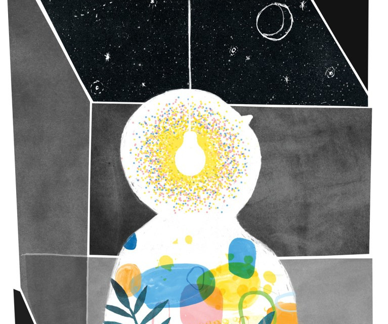
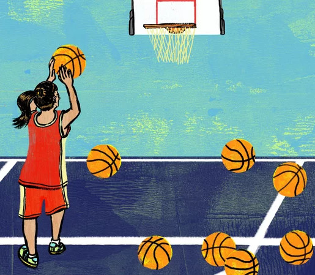

Cultivating growth mindsets
Those with a growth mindset believe that they can acquire any given ability provided they invest effort or study.
In a growth mindset, individuals understand that their talents and abilities can be developed through effort, good teaching, and persistence. They do not necessarily think everyone is the same or anyone can be Einstein, but they believe everyone can get smarter if they work at it.
Teaching
Ultimately, the point of learning is to understand the world. But most of us don’t bother to deliberately learn anything. We memorize what we need to as we move through school, then forget most of it. As we continue through life, we don’t extrapolate from our experiences to broaden the applicability of our knowledge. These happen when we actually teach what we know to others.
Reflection
Reflection can involve several cognitive activities that lead
to stronger learning: retrieving knowledge and earlier training
from memory, connecting these to new experiences, and visu-
alizing and mentally rehearsing what you might do differently
next time.
Self-discipline
Self-discipline is the ability to push yourself forward, stay motivated, and take action, regardless of how you're feeling, physically or emotionally. You are showing it when you intentionally choose to pursue something better for yourself, and you do it in spite of factors like distractions, hard work, or unfavorable odds.

Cognitive-burden management
When we decide to take upon a new skill or idea to learn about we must actively recall it and put ourselves in situations where we have to use these new knowledge or skills. This is what is called managing the cognitive burden that comes with a skill or area of knowledge.

Grit
In psychology, grit is a positive, non-cognitive trait based on an individual's perseverance of effort combined with the passion for a particular long-term goal or end state (a powerful motivation to achieve an objective). This perseverance of effort promotes the overcoming of obstacles or challenges that lie on the path to accomplishment and serves as a driving force in achievement realization.